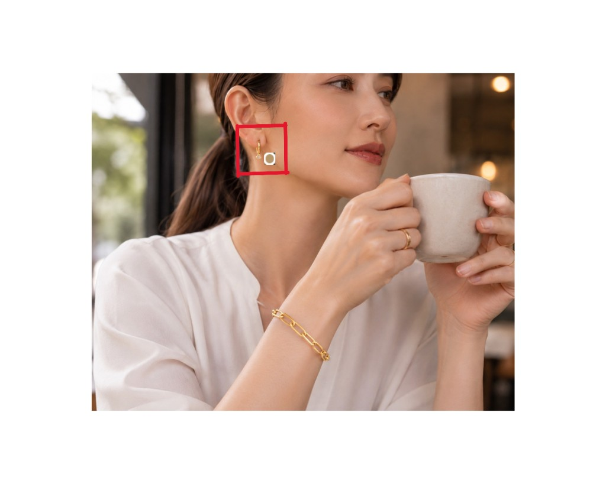

Screen 01
ログイン
共有の社内アカウントで入る。ブランド名が最初の画面の主役。
Ti amo
Jewelry
Studio
イタリアンゴールドジュエリーの商品ページ用写真を、型どおり10枚そろえる。
Internal · EC Ops
Sign in
社内ログイン
Screen 02
ジョブ一覧
ログイン直後の画面。状態・保管期限・削除。生成中もここから戻れる。
Jobs
ジョブ
3枚を上げる → 待つ → 直す → ZIP。生成結果は14日で削除されます。
すべてのジョブ
5 件 · 新しい順| ジョブ | 状態 | カテゴリ | 人物 | 作成 | 保管 | |
|---|---|---|---|---|---|---|
| js-2104… | 完了 | ブレスレット | Sofia | 2026/08/22 14:02 | 残り12日 | 削除 |
| js-2103… | 生成中 | ネックレス | Elena | 2026/08/22 13:48 | 残り14日 | 削除 |
| js-2101… | 失敗 | ピアス | Mia | 2026/08/21 19:10 | 残り2日 | 削除 |
| js-2048… | 完了 | リング | Sofia | 2026/08/10 11:22 | 残り2日 | 削除 |
| js-1980… | 期限切れ | ネックレス | Elena | 2026/08/01 09:04 | 期限切れ（画像は削除済み） | 削除 |
Screen 03
新規ジョブ
3枚UP・必須が揃うまで生成不可。インセット元は任意。結果は14日で消える旨を出す。
New job
新規ジョブ
商品写真 3枚
同一商品・白〜淡色背景・角度違い。順序がディテール1〜3。サムネを選ぶとメイン切替。JPEG / PNG / WebP・各12MBまで。
着用に使うメイン写真は、手首に付けたときと同じ向き（少し楕円に見える角度）が合いやすいです。真上の円だと貼り付けが目立ちます。
 1 · MAIN
1 · MAIN
 2
メインにする
2
メインにする
メイン写真: 1枚目 を着用合成に使用
カテゴリ
着用4枚は手首をカメラ正面に向けます。腕は組みません。顔は上側に残します
地金カラー
人物プリセット（1人選ぶ · このジョブ内で固定）
 Sofia
Sofia
 Elena
Elena
 Mia
Mia
ディテール背景（3枚で統一）

白大理石 · トラバーチン · リネン · 黒石
全身トーン（ちょうど2つ）
2/2 選択中
インセットに使うディテール（任意・あとから変更可）
必須が揃っています → 生成可能。結果は14日で削除されます。
不足: 商品写真3枚
Screen 04
進捗
5段階・経過時間・「画面を閉じても続く」。途中画像は出さない。
Job · 生成中
進捗
生成しています
ブレスレット · YG · Sofia · 白大理石
およそあと 1〜3分 · 人物シーンがいちばん時間がかかります 経過 1分42秒
この画面を閉じても生成は続きます。一覧からいつでも戻れます。 人物生成 約40/200円。
- ✓ 切り抜き
- ✓ ディテール
- 3 人物シーン · いまここ 着用7枚を作っています。いちばん時間がかかります
- 4 合成
- 5 仕上げ
Screen 04b
進捗 · 失敗
段階名つき。最初から／失敗した段階から。上限到達時はリトライ不可。
FAILED
人物シーンで失敗しました
段階「人物シーン」でエラー。切り抜きとディテールは残っています。
人物生成 約80/200円
- ✓切り抜き
- ✓ディテール
- !人物シーン — 失敗
- 4合成
- 5仕上げ
同じ写真・設定のままやり直します。ワーカーが起動している必要があります。
Screen 04c
進捗 · 停止
12分以上更新が無いときだけ「止まっているのでやり直す」を出す。
生成しています
ネックレス · YG · Elena · 白大理石
およそあと 1〜3分 · 人物シーンがいちばん時間がかかります 経過 12分08秒
この画面を閉じても生成は続きます。一覧からいつでも戻れます。
画面が止まったときは、ワーカーを起動し直してからここを押してください。
Screen 05
レビュー
10枠・ダメな枠だけ再生成。保管残り日数と 約◯/200円。ZIP。
Job · 完了
レビュー
10枚の確認
ジョブ js-2104 · 同一人物 Sofia · 2000×2000 · 残り12日 · 人物生成 約72/200円
ブレスレット · YG · Sofia · 白大理石 · ダメな枠は再生成。着用系はドラッグで大きさ・位置、スライダーで回転
Detail · AI人物なし · 01–03
01 detail_a
ディテール A を再生成しますか？人物は同じプリセットのままです。
02 detail_b
 03 detail_c
03 detail_c
Wear · 着用シーン · 04–07
 04 office
04 office
 05 cafe
05 cafe
 06 date
06 date
 07 holiday
07 holiday
Body & Inset · 08–10
 08 body · トーン1
08 body · トーン1
 09 body · トーン2
09 body · トーン2
 10 wide_inset
10 wide_inset
Screen 05b
レビュー · 位置調整
実物切り抜きをドラッグ。右下の丸で大きさ。スライダーで±180°。ピアスは片方を消せる。
ブレスレット · オフィス
ジュエリーをドラッグで移動 · 右下の丸で大きさ · スライダーで一周回転
ピアス · 片方消し（横顔用）

左右それぞれドラッグで移動 · 丸のつまみでサイズ · スライダーで一周回転 · 横顔では見えない側を消せます
Screen 06
期限切れ
14日後に画像を消す。行は残る。ZIPも再生成も不可。
Job · 期限切れ
期限切れ
期限切れ
生成結果は14日で削除されました。ZIP は出せません。一覧の削除でこの行も消せます。
Screen 07
プリセット
人物・背景・トーンの追加／改名／削除。ジョブで使っているものは消せない。
Presets
プリセット
人物・ディテール背景・全身トーンを追加できます。ジョブで使っているものは消せません。
人物
3 人 · 写真なしは生成時に顔を作ります
Sofia
名前 · 写真 · 削除
Elena
名前 · 写真 · 削除
Mia
名前 · 写真 · 削除
ディテール背景
4 件 · 写真を上げるとディテール3枚の背景になります
白大理石
名前 · 写真 · 削除
トラバーチン
名前 · 写真 · 削除
リネン
名前 · 写真 · 削除
黒石
名前 · 写真 · 削除
全身トーン
4 件 · ジョブではちょうど2つ選びます3枚を上げる → 待つ → 直す → ZIP
一覧・プリセット・14日削除・1ジョブ200円・位置のドラッグ回転まで、いま動いている画面の骨格です。 実物は localhost:3000（生成）と学校提出用の Vercel（ログイン＋一覧）です。